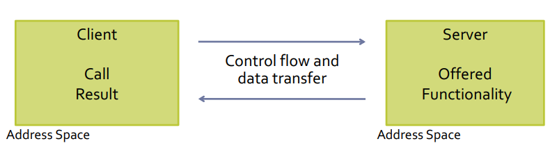
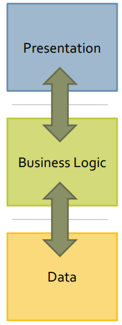
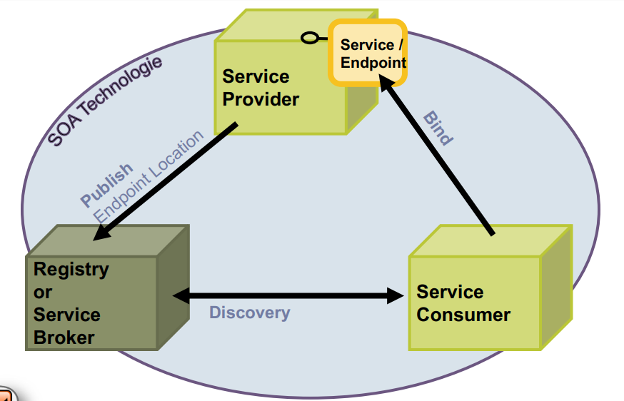
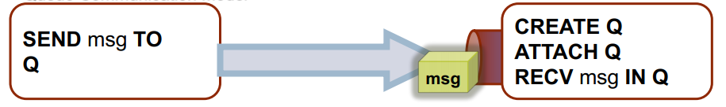
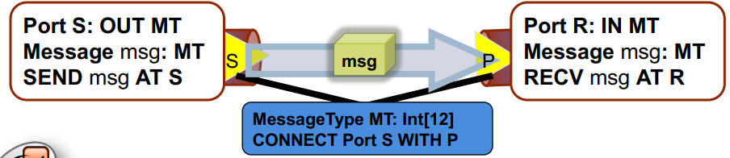
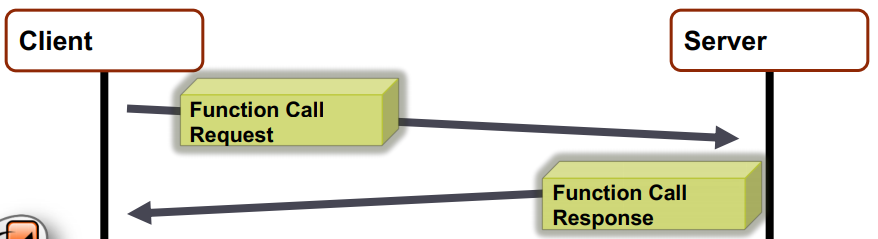

System Architectures
Architecture is the fundamental organizsation of a system embodied in its components, their relationships to each other and to the environment and the principles guiding its design and evolution (Source: IEEE 1471 ← seems to be superseded by ISO/IEEE 42010).
A system is a collection of components organized to accomplish a specific function or set of functions. The term "system" encompasses individual applications, systems in the traditional sense, subsystems, systems of systems, product lines, product families, whole enterprises and other aggregations of interet. A system exists to fulfill one or more missions in its environment.
The environment (or "context") determines the setting and circumstances of developmental, operational, political and other influences upon that system.
A mission is a use or operation for which a system is intended by one or more stakeholders to meet some set of objectives.
An architecture
- defines structure
- defines behavior
- builds focus on the significant elements
- balances stakeholder needs
- embodies decision on rationale
- may conform to an architectural styling
- is influenced by its environment
Client/Server Model
The Client/Server Model is a traditional approach, which is made use of in many others. As a role-based approach the Server takes the role of a component on the service providers' side and the Client takes the role of a component on the service users' side.
Examples of Client/Server Models would be TCP/IP, Sockets and Web Servers (plus many more!).

There are special types of the C/S Model for example:
-
object-oriented model
- units of communication and distribution are objects
- according programming model
- data access is realized by direct object access, data transfer by reference semantics, location is modifiable (object migration)
- examples: Java RMI, SOAP, CORBA
-
component-based model
- focus on reuse without the OO problem
- black-box principle with a focus on configuration and deployment model
- examples: Corba Components, Enterprise JavaBeans, .Net Components
N-Tier Architecture

N-tier architecture (or multitier architecture) is a client-server architecture in which, presentation, application processing and data management functions are physically separated.
It structures distributed systems into layers/levels (typically according to functional aspects), their distribution and interfaces. N-tier architecture is mostly realized with the help of middleware.
Examples of n-tier architecture are:
- two-tier architecture which corresponds to a Client/Server with fixed interfaces
- three-tier architecture which is commonly used in practice for structuring according to presentation-, processing- and persistency layers
N-Tier Architecture: Cluster
A cluster is a set of computers/servers, which are connected to each other over a fast network and can be seen as a single unit from the outside. This (often) entails the need/option for:
- load distribution
- fault tolerance
- parallel processing
The Chemnitz-Hochleistungs-Linux-Clusters (CHiC) would be an example of a database cluster.
Structuring the distributed system into such layers/levels enables replication with an focus of the processing and persistency layers
Service-Oriented Architecture (SOA)
Service-Oriented Architecture is often associated with technologies such as Web Services, but is in fact independent of the technology used. It is a style of software design with focus on the interplay of service providers, service users and service agents.
SOA is process-oriented with services as a base concept and enable cross-platform/-enterprise service delivery. Interface reuse and interoperability is amongst the main points in SOA. The service composition in SOA is done via orchestration and choreography.
- orchestration = creation of new complex services through composition of existing ones → focus: declarative composition
- choreography = combination of services for business process → focus: description of message exchange procedure

Grid Computing
Grid computing is an approach to aggregation and shared use of heterogenous networked resources, such as computers, databases and scientific tools. The motivation behind grid computing lies (among other things) in the use of available but underutilized computers/resources.
The "grid" acts as a coordinator of resource distribution and use. It dictates the protocols and interfaces to be used to achieve a certain quality of service.
Peer-to-Peer Architecture
In peer-to-peer architectures peers communicate with each other and offer services to their partners (peers) or use the partners' services. Unlike typical C/S architectures with a few or one servers and many clients, P2P architectures have no fixed assignments.
Communication in P2P architectures requires peer coordination for service provisioning and service utilization purposes. The type of a P2P network is either pure, superpeer or hybrid. The communication is structured by means of algorithms for service discovery and addressing mostly via distributed hash table (DHT).
Examples of P2P architectures are Gnutella, Napster or KaZaa for filesharing or collaboration tools.
Important: Read about SOLID https://www.inrupt.com/blog/one-small-step-for-the-web and must read: https://solid.inrupt.com/docs
Chapter 3 about basic communication models is skipped but can serve as reference material so you might want to skim through it.
Communication in Programming
Classical Programming
The key idea of classical programming is to utilize algorithm(s) / knowledge hidden in a reusable unit. There are different programming approaches and they also differ in the way they reuse units:
-
procedural programming: Function
- aggregation of functions (step-by-step, conditionals, loops etc)
- the knowledge abstraction is low and achieved via functions
- reuse is done via source code (same language)
-
object oriented programming: Object
- aggregation of data and functions (aka methods)
- the knowledge abstraction is high and achieved via objects, composition etc
- reuse is done via source code (same OO language)
-
component-based software development: Component
- separation between interface and component-based-software-development-knowledge
- the knowledge abstraction is packaged as a binary unit
- the reuse unit is very high via distribution of binary
Reuse units in distributed systems?
Different systems provide different abstractions (eg database, webserver, business logic,..). These abstractions range from small to large scale and are (or should be!) independent from programming paradigms.
To reuse units in distributed systems the focus is on communication / message exchange:
- as a means to provide functionality
- zero-installation (provider did already)
- risks and challenged are different from classical programming paradigm ones
Communication
Communication is a mechanism of data exchange between components that are executed on host sytems.
Challenges of communication:
- message transport with regard to communication medium conditions
- interoperability and cooperation of components and host systems
- system architecture support with regards to communication - or programming model
- much more: quality aspects, security trust
Message Exchange Approach
Message exchange approaches follow the Sender-Reciever paradigm:
- message: (typed) data is sent from a Sender(S) to a Reciever(R)
- sender-reciever relationship
- symmetric → S and R know each other
- asymmetric → only S knows R
There are different message exchange models which follow the sender-reciever paradigm, for instance:
- Direct Addressing Model
- Queue Communication Model
- Port-oriented Communication Model
- Request/Response Model
- Pull/Push Model
-
Direct Addressing Model
\[\fbox{SEND msg TO R} \rightarrow msg \rightarrow \fbox{RECV msg FROM R}\]
-
Queue Communication Model

-
Port-oriented Communication Model

-
Request/Response Model
The request/response model is the standard idea of distributed computing. The focus lies on behavior of programming languages. Note that in contrast to message exchange models (kind of contradiction because this is listed as a message exchange model in the script as seen above?!), the request/response model is inherently synchronous. Each operation determines a communication relationship.

-
Pull/Push Model
Pull-Medium: use of the endpoint originates from the user
- eg: Request/Response approaches like HTTP
Push-Medium: user is notified of specific events / provided data by the endpont
- eg: publish/subscribe approaches
Programming in Distributed Systems
Programming in or with distributed systems requires a look at many different aspects:
- see above for the challenges discussed earlier
- communication aspects between components
- realisation of address, bindind and contract
- programming paradigms to take care of
It all started with TCP/IP and sockets:
TCP: Addressing
Identification of TCP services occurs over ports (TSAPs in OSI terminology). Port numbers up to 255 are reserved for frequently used services, eg 21 for FTP, 23 for TELNET, 80 for HTTP). A socket consists of a computers' internet address and a port. The notation of a socket looks like IP-Address:Port Number and is applied internet wide.
FOr example a FTP server on a computer with the IP address 129.13.35.7 can be reachend on the 129.13.35.7:21 socket.
TCP: Connection Setup
Connections can be setup as active (connect) or passive (listen / accept) after socket creation.